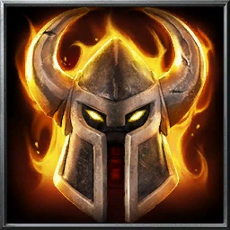

Inferno Helm
Recipes

An Inferno Helm is an equipable that goes in the head slot.
Only one equipable can occupy the head slot
The Inferno Helm grants 2+ Armour, 1- Vision
Wearing the Inferno helm adds Flame status effect to all attacks
Grants the Raging inferno status effect when worn with full Inferno set
Ingredients
- 10 Iron Bars
- 20 Helldust
- 5 Fire Energy
Steps
- Set the 10 Iron Bars into the Blast Furnace
- When fully smelted, remove slag carefully with slotted slag-ladle
- Pour the molten Iron into Illuminite Forming Press
- Slowly add Helldust (1 dust per second) while forming the helmet in the Press
- Insert all 5 fire energy into energy deposit chamber on Illuminite Forming Press